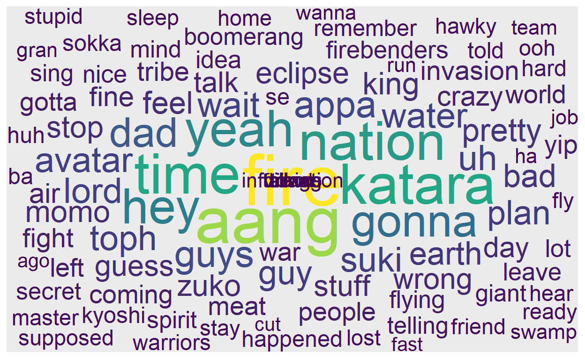

Motivation
Avatar: The Last Airbender is arguably the greatest animated TV show of all time. Being such a great show, it deserves to have great, well organized data. This post details my web scraping of the Avatar Wiki and IMDB for transcript and ratings data. I was inspired to collect Avatar: The Last Airbender data after messing around with the schrute R package that contains transcript data from The Office.
Rows: 55,130
Columns: 12
$ index <int> 1, 2, 3, 4, 5, 6, 7, 8, 9, 10, 11, 12, 1...
$ season <int> 1, 1, 1, 1, 1, 1, 1, 1, 1, 1, 1, 1, 1, 1...
$ episode <int> 1, 1, 1, 1, 1, 1, 1, 1, 1, 1, 1, 1, 1, 1...
$ episode_name <chr> "Pilot", "Pilot", "Pilot", "Pilot", "Pil...
$ director <chr> "Ken Kwapis", "Ken Kwapis", "Ken Kwapis"...
$ writer <chr> "Ricky Gervais;Stephen Merchant;Greg Dan...
$ character <chr> "Michael", "Jim", "Michael", "Jim", "Mic...
$ text <chr> "All right Jim. Your quarterlies look ve...
$ text_w_direction <chr> "All right Jim. Your quarterlies look ve...
$ imdb_rating <dbl> 7.6, 7.6, 7.6, 7.6, 7.6, 7.6, 7.6, 7.6, ...
$ total_votes <int> 3706, 3706, 3706, 3706, 3706, 3706, 3706...
$ air_date <fct> 2005-03-24, 2005-03-24, 2005-03-24, 2005...Here we go!
As usual, here are the required packages for collecting and manipulating the data:
Web scraping tools
Honestly, I don’t have too much experience web scraping, but the best way to get better at something is to do that thing more. To make web scraping easier there are just a couple of tools that I use.
- rvest - Hadley Wickham’s R package for web scraping
There are many tutorials and blog posts teaching how to use rvest to web scrape data. A quick google search “web scraping with r rvest” will bring up a lot of good stuff.
- SelectorGadget - a CSS selector generation chrome extension
After installing and activating the chrome extension, click on a page element that you are interested in, and then SelectorGadget will “generate a minimal CSS selector for that element.” Below is an image of what that would look like. Look up the extension to learn more.

You can then take what SelectorGadget gives you, and put that into rvest::html_nodes as shown below.
Armed with these tools, we can dive into the mess of it all.
Web scraping
Transcripts
The first page of interest on the Avatar Wiki has a list of every episode in the series with links to their individual transcripts.

Ultimately, we want to scrape all of the transcript text from pages like this:

Taking a look at just a few of the transcript pages, we can see a handy pattern in the url for each page.


Basically each one starts with https://avatar.fandom.com/wiki/Transcript: and is followed simply by the episode name, like so: https://avatar.fandom.com/wiki/Transcript:The_Boy_in_the_Iceberg.
Armed with that knowledge, we can use some nifty R magic to
- scrape the names of the episodes (chapters) from the main transcript page, and
- use the name of the chapters to iterate through and scrape each individual chapter transcript
I hope that makes sense.
First, we’ll read in the transcript page with rvest::read_html, input the CSS selector that we got using SelectorGadget into rvest::html_nodes, and extract out all of the text with rvest::html_text.
# main transcript page url
avatar_wiki <- read_html("https://avatar.fandom.com/wiki/Avatar_Wiki:Transcripts")
# scrape the chapter names
chapters <- avatar_wiki %>%
html_nodes("td") %>%
html_text()
Now we have to beautify the ugly mess of text that comes in.
tibble::enframe quite easily turns our blob of text into a nice tibble. There is still more cleaning required, but getting your data into a tibble often makes your life easier. All of your favorite dplyr functions like filter and mutate work nicely with tibbles.
We scraped more data than we need, so we will do some filtering. We only want the original Avatar data, not Legend of Korra (although maybe I should scrape that later), so we’ll just get the first 70 rows. There are some rows that contain more data than just single chapters (len < 50), so we’ll get rid of those as well.
Lastly, we’ll clean up the chapter column with some stringr functions and filter out a couple of bonus episodes that we don’t really want.
# to see rows with too much text that are actually many chapters
chapters %>%
enframe(name = "row_num", value = "chapter") %>%
filter(row_num %in% 1:70) %>%
mutate(len = str_length(chapter))
# A tibble: 70 x 3
row_num chapter len
<int> <chr> <int>
1 1 "\n0\n\n\"Unaired pilot\"\nBook One: Water\n\n1\n\n\~ 5743
2 2 "\"Unaired pilot\"\n" 16
3 3 "\n1\n\n\"The Boy in the Iceberg\"\n2\n\n\"The Avata~ 278
4 4 "\"The Boy in the Iceberg\"\n" 25
5 5 "\"The Avatar Returns\"\n" 21
6 6 "\"The Southern Air Temple\"\n" 26
7 7 "\"The Warriors of Kyoshi\"\n" 25
8 8 "\"The King of Omashu\"\n" 21
9 9 "\"Imprisoned\"\n" 13
10 10 "\"Winter Solstice, Part 1: The Spirit World\"\n" 44
# ... with 60 more rowschapters <- chapters %>%
enframe(name = "row_num", value = "chapter") %>%
filter(row_num %in% 1:70) %>%
mutate(len = str_length(chapter)) %>%
filter(len < 50) %>%
mutate(chapter = str_remove_all(chapter, pattern = "\""),
chapter = str_trim(chapter, side = "both"),
chapter = str_remove_all(chapter, " \\(commentary\\)")) %>%
filter( !(chapter %in% c("Unaired pilot", "Escape from the Spirit World")) )
chapters
# A tibble: 61 x 3
row_num chapter len
<int> <chr> <int>
1 4 The Boy in the Iceberg 25
2 5 The Avatar Returns 21
3 6 The Southern Air Temple 26
4 7 The Warriors of Kyoshi 25
5 8 The King of Omashu 21
6 9 Imprisoned 13
7 10 Winter Solstice, Part 1: The Spirit World 44
8 11 Winter Solstice, Part 2: Avatar Roku 39
9 12 The Waterbending Scroll 26
10 13 Jet 6
# ... with 51 more rowsNice.
Now that we have all the chapter names, we can use them to scrape each chapter’s transcript page. My general philosophy for automation and iteration is to do something once or twice, then extract the pattern and do that same thing for everything.
Remember that each chapter transcript page pretty much looks like this:

Okay, looking at the code below there are a couple of things to talk about. Notice the “table.wikitable” in html_nodes below. Unfortunately, sometimes you cannot get super helpful results with SelectorGadget. You can, however, inspect the page (right click and go to Inspect) and grab specific html elements. That is generally what I do if SelectorGadget is giving me any trouble. We are also using html_table instead of html_text.
The table that is returned is a list with two elements: one with character names, and the other with spoken words and scene directions. So, we’ll use purrr::pluck, purrr::simplify, and enframe on both elements, respectively, and give each tibble a new column with the chapter link to serve as an id column.
First, The Boy in the Iceberg.
iceberg <- read_html("https://avatar.fandom.com/wiki/Transcript:The_Boy_in_the_Iceberg")
characters <- iceberg %>%
html_nodes("table.wikitable") %>%
html_table() %>%
pluck(1) %>%
simplify() %>%
enframe(value = "value1") %>%
mutate(chapter1 = "https://avatar.fandom.com/wiki/Transcript:The_Boy_in_the_Iceberg") %>%
select(-name)
text <- iceberg %>%
html_nodes("table.wikitable") %>%
html_table() %>%
pluck(2) %>%
simplify() %>%
enframe(value = "value2") %>%
mutate(chapter2 = "https://avatar.fandom.com/wiki/Transcript:The_Boy_in_the_Iceberg") %>%
select(-name)
iceberg2 <- bind_cols(characters, text) %>%
rename(character = value1, text = value2)
iceberg2
# A tibble: 223 x 4
character chapter1 text chapter2
<chr> <chr> <chr> <chr>
1 "Katara" https://avatar.fan~ "Water. Earth. Fi~ https://avatar.fa~
2 "" https://avatar.fan~ "As the title car~ https://avatar.fa~
3 "Sokka" https://avatar.fan~ "It's not getting~ https://avatar.fa~
4 "" https://avatar.fan~ "The shot pans qu~ https://avatar.fa~
5 "Katara" https://avatar.fan~ "[Happily surpris~ https://avatar.fa~
6 "Sokka" https://avatar.fan~ "[Close-up of Sok~ https://avatar.fa~
7 "" https://avatar.fan~ "Behind Sokka, Ka~ https://avatar.fa~
8 "Katara" https://avatar.fan~ "[Struggling with~ https://avatar.fa~
9 "" https://avatar.fan~ "The bubble conta~ https://avatar.fa~
10 "Katara" https://avatar.fan~ "[Exclaims indign~ https://avatar.fa~
# ... with 213 more rowsSecond, The Avatar Returns.
returns <- read_html("https://avatar.fandom.com/wiki/Transcript:The_Avatar_Returns")
characters2 <- returns %>%
html_nodes("table.wikitable") %>%
html_table() %>%
pluck(1) %>%
simplify() %>%
enframe(value = "value1") %>%
mutate(chapter1 = "https://avatar.fandom.com/wiki/Transcript:The_Avatar_Returns") %>%
select(-name)
text2 <- returns %>%
html_nodes("table.wikitable") %>%
html_table() %>%
pluck(2) %>%
simplify() %>%
enframe(value = "value2") %>%
mutate(chapter2 = "https://avatar.fandom.com/wiki/Transcript:The_Avatar_Returns") %>%
select(-name)
returns2 <- bind_cols(characters2, text2) %>%
rename(character = value1, text = value2)
returns2
# A tibble: 182 x 4
character chapter1 text chapter2
<chr> <chr> <chr> <chr>
1 "Katara" https://avatar.fan~ Water. Earth. Fi~ https://avatar.fa~
2 "" https://avatar.fan~ The episode open~ https://avatar.fa~
3 "Village ~ https://avatar.fan~ [Joyfully.] Yay!~ https://avatar.fa~
4 "" https://avatar.fan~ Some of them run~ https://avatar.fa~
5 "Sokka" https://avatar.fan~ [Angrily.] I kne~ https://avatar.fa~
6 "Katara" https://avatar.fan~ [Protesting.] Aa~ https://avatar.fa~
7 "Aang" https://avatar.fan~ [Sheepishly, as ~ https://avatar.fa~
8 "Kanna" https://avatar.fan~ [Worriedly.] Kat~ https://avatar.fa~
9 "Aang" https://avatar.fan~ [Sorrowfully.] D~ https://avatar.fa~
10 "Sokka" https://avatar.fan~ [Angry and trium~ https://avatar.fa~
# ... with 172 more rowsNow that we successfully executed the code on two different chapters, we will use that same pattern for the rest. Well, almost the same. For some reason (for the next 59 chapters) we have to pluck “X1” and “X2” instead of the elements 1 and 2.
Before we get to that, we’ll use the chapter column from chapters and manipulate the data so that we get a character vector of the links for each chapter transcript page. Notice how we have to replace the ' with %27 because of how the links are set up.
We’ll use glue::glue for easy string interpolation. glue is vectorized: no need to write a for loop yourself.
chapter_urls <- chapters %>%
filter( !(chapter %in% c("The Boy in the Iceberg", "The Avatar Returns")) ) %>%
mutate(chapter = str_replace_all(chapter, pattern = " ", replacement = "_"),
chapter = str_replace_all(chapter, pattern = "\'", replacement = "%27")) %>%
pull(chapter)
full_urls <- glue("https://avatar.fandom.com/wiki/Transcript:{chapter_urls}")
full_urls %>% head(5)
https://avatar.fandom.com/wiki/Transcript:The_Southern_Air_Temple
https://avatar.fandom.com/wiki/Transcript:The_Warriors_of_Kyoshi
https://avatar.fandom.com/wiki/Transcript:The_King_of_Omashu
https://avatar.fandom.com/wiki/Transcript:Imprisoned
https://avatar.fandom.com/wiki/Transcript:Winter_Solstice,_Part_1:_The_Spirit_WorldNow use purrr::map to apply our code from before to each url (.x) in full_urls. Sometimes I like to use the tictoc package to time code that takes a little longer. tic starts the timer, while toc ends it.
tic()
characters_all <- full_urls %>%
map(~ read_html(.x) %>%
html_nodes("table.wikitable") %>%
html_table() %>%
pluck("X1") %>%
simplify() %>%
enframe() %>%
mutate(chapter = .x))
toc()
13.62 sec elapsedtic()
transcripts_all <- full_urls %>%
map(~ read_html(.x) %>%
html_nodes("table.wikitable") %>%
html_table() %>%
pluck("X2") %>%
simplify() %>%
enframe() %>%
mutate(chapter = .x))
toc()
13.91 sec elapsedAll of them worked great, except for something weird that happened with The Tales of Ba Sing Se chapter. characters_all has one too many rows for some reason, and in transcripts_all the value column created from using enframe is a list-column instead of a character vector like all of the others.
characters_all[[33]]
# A tibble: 178 x 3
name value chapter
<int> <chr> <glue>
1 1 "" https://avatar.fandom.com/wiki/Transcript:The_Tales~
2 2 "Katara" https://avatar.fandom.com/wiki/Transcript:The_Tales~
3 3 "" https://avatar.fandom.com/wiki/Transcript:The_Tales~
4 4 "Toph" https://avatar.fandom.com/wiki/Transcript:The_Tales~
5 5 "Katara" https://avatar.fandom.com/wiki/Transcript:The_Tales~
6 6 "Toph" https://avatar.fandom.com/wiki/Transcript:The_Tales~
7 7 "Katara" https://avatar.fandom.com/wiki/Transcript:The_Tales~
8 8 "Toph" https://avatar.fandom.com/wiki/Transcript:The_Tales~
9 9 "Katara" https://avatar.fandom.com/wiki/Transcript:The_Tales~
10 10 "" https://avatar.fandom.com/wiki/Transcript:The_Tales~
# ... with 168 more rowstranscripts_all[[33]]
# A tibble: 6 x 3
name value chapter
<int> <list> <glue>
1 1 <chr [37~ https://avatar.fandom.com/wiki/Transcript:The_Tales~
2 2 <chr [31~ https://avatar.fandom.com/wiki/Transcript:The_Tales~
3 3 <chr [31~ https://avatar.fandom.com/wiki/Transcript:The_Tales~
4 4 <chr [25~ https://avatar.fandom.com/wiki/Transcript:The_Tales~
5 5 <chr [53~ https://avatar.fandom.com/wiki/Transcript:The_Tales~
6 6 <NULL> https://avatar.fandom.com/wiki/Transcript:The_Tales~That just means we need to do some additional data wrangling. We’ll use purrr::modify_at to modify the 33rd element of each list
characters_all2 <- characters_all %>%
modify_at(33, ~ filter(.x, row_number() != 178)) %>%
bind_rows()
transcripts_all2 <- transcripts_all %>%
modify_at(33, ~ unnest(.x, cols = value)) %>%
bind_rows()
Everything matches up now, so we’ll bind the character and transcript data together.
full_transcript <- bind_cols(
characters_all2 %>% select(character = value, chapter1 = chapter),
transcripts_all2 %>% select(text = value, chapter2 = chapter)
)
full_transcript
# A tibble: 12,984 x 4
character chapter1 text chapter2
<chr> <glue> <chr> <glue>
1 "" https://avatar.fand~ The episode beg~ https://avatar.fan~
2 "Aang" https://avatar.fand~ [Excitedly.] Wa~ https://avatar.fan~
3 "Katara" https://avatar.fand~ [Cautiously.] A~ https://avatar.fan~
4 "Aang" https://avatar.fand~ [Smiling broadl~ https://avatar.fan~
5 "Katara" https://avatar.fand~ [Cautiously.] I~ https://avatar.fan~
6 "Aang" https://avatar.fand~ [Happily.] I kn~ https://avatar.fan~
7 "" https://avatar.fand~ Aang jumps off ~ https://avatar.fan~
8 "Aang" https://avatar.fand~ [Cheerfully.] W~ https://avatar.fan~
9 "Sokka" https://avatar.fand~ [Grunting sleep~ https://avatar.fan~
10 "" https://avatar.fand~ Sokka turns aro~ https://avatar.fan~
# ... with 12,974 more rowsDon’t forget about the first two episodes. We’ll bind those to the data as well.
dat <- bind_rows(iceberg2, returns2, full_transcript)
Now onto more data wrangling:
- Clean up the chapter column
- Create a book column
- Create book_num and chapter_num columns
- Create an id column
- Mutate the character column to add the “Scene Description” value
dat <- dat %>%
select(character, text, chapter = chapter1) %>%
mutate(
chapter = str_remove_all(chapter, "https://avatar.fandom.com/wiki/Transcript:"),
chapter = str_replace_all(chapter, "_", " "),
chapter = str_replace_all(chapter, pattern = "%27", replacement = "\'")) %>%
left_join(
chapters %>%
mutate(
book = case_when(
row_number() %in% 1:20 ~ "Water",
row_number() %in% 21:40 ~ "Earth",
TRUE ~ "Fire"
)
) %>%
group_by(book) %>%
mutate(
chapter_num = row_number()
) %>%
ungroup() %>%
mutate(
book_num = case_when(
book == "Water" ~ 1,
book == "Earth" ~ 2,
book == "Fire" ~ 3
)
) %>%
select(chapter, chapter_num, book, book_num)) %>%
mutate(id = row_number(),
character = ifelse(character == "", "Scene Description", character))
Finally, we’ll split up the text column into character_words and scene_description. We’ll have to use some more stringr functions and some regular expressions, but it won’t be too bad.
dat_transcript <- dat %>%
mutate(scene_description = str_extract_all(text, pattern = "\\[[^\\]]+\\]"),
character_words = str_remove_all(text, pattern = "\\[[^\\]]+\\]"),
character_words = ifelse(character == "Scene Description",
NA_character_,
str_trim(character_words))) %>%
select(id, book, book_num, chapter, chapter_num,
character, full_text = text, character_words, scene_description)
dat_transcript
# A tibble: 13,389 x 9
id book book_num chapter chapter_num character full_text
<int> <chr> <dbl> <chr> <int> <chr> <chr>
1 1 Water 1 The Bo~ 1 Katara "Water. ~
2 2 Water 1 The Bo~ 1 Scene De~ "As the ~
3 3 Water 1 The Bo~ 1 Sokka "It's no~
4 4 Water 1 The Bo~ 1 Scene De~ "The sho~
5 5 Water 1 The Bo~ 1 Katara "[Happil~
6 6 Water 1 The Bo~ 1 Sokka "[Close-~
7 7 Water 1 The Bo~ 1 Scene De~ "Behind ~
8 8 Water 1 The Bo~ 1 Katara "[Strugg~
9 9 Water 1 The Bo~ 1 Scene De~ "The bub~
10 10 Water 1 The Bo~ 1 Katara "[Exclai~
# ... with 13,379 more rows, and 2 more variables:
# character_words <chr>, scene_description <list>Now we have all of the transcript data in a nice and tidy dataframe! Hooray! We could stop there, but we might as well get more data.
Writers and Directors
Let’s scrape the writers and directors data from pages like this:

I won’t go over the code as much because it is pretty similar to what we did before. Just remember the philosophy: do it once, then extract the pattern and do that same thing for everything.
iceberg_overview <- read_html("https://avatar.fandom.com/wiki/The_Boy_in_the_Iceberg")
iceberg_overview %>%
html_nodes(".pi-border-color") %>%
html_text() %>% head(5)
[1] "Information\n\n\n\t\n\t\tSeries\n\t\n\tAvatar: The Last Airbender\n\n\n\n\t\n\t\tBook\n\t\n\tWater\n\n\n\n\t\n\t\tEpisode\n\t\n\t1/61\n\n\n\n\t\n\t\tOriginal air date\n\t\n\tFebruary 21, 2005\n\n\n\n\t\n\t\tWritten by\n\t\n\t<U+200E>Michael Dante DiMartino, Bryan KonietzkoAdditional writing: Aaron Ehasz, Peter Goldfinger, Josh Stolberg\n\n\n\n\t\n\t\tDirected by\n\t\n\tDave Filoni\n\n\n\n\t\n\t\tAnimation\n\t\n\tJM Animation\n\n\n\n\t\n\t\tGuest stars\n\t\n\tMako (Uncle), Melendy Britt (Gran Gran)\n\n\n\n\t\n\t\tProduction number\n\t\n\t101\n\n\n"
[2] "\n\t\n\t\tSeries\n\t\n\tAvatar: The Last Airbender\n"
[3] "\n\t\n\t\tBook\n\t\n\tWater\n"
[4] "\n\t\n\t\tEpisode\n\t\n\t1/61\n"
[5] "\n\t\n\t\tOriginal air date\n\t\n\tFebruary 21, 2005\n" # in addition to being an episode,
# Jet is a character and Lake Laogai is a place
# so the links have _(episode) at the end
chapter_urls2 <- chapters %>%
mutate(chapter = str_replace_all(chapter, pattern = " ", replacement = "_"),
chapter = str_replace_all(chapter, pattern = "\'", replacement = "%27"),
chapter = case_when(
chapter == "Jet" ~ "Jet_(episode)",
chapter == "Lake_Laogai" ~ "Lake_Laogai_(episode)",
TRUE ~ chapter
)) %>%
pull(chapter)
# remember full_urls? overview_urls is just like that
overview_urls <- glue("https://avatar.fandom.com/wiki/{chapter_urls2}")
Do it once.
overview_urls[32] %>%
read_html() %>%
html_nodes(".pi-border-color") %>%
html_text() %>%
.[6:7] %>%
enframe() %>%
mutate(value = str_trim(value)) %>%
separate(col = value, into = c("role", "name"), sep = " by") %>%
mutate(name = str_trim(name)) %>%
pivot_wider(names_from = role, values_from = name)
# A tibble: 1 x 2
Written Directed
<chr> <chr>
1 Joshua Hamilton, Michael Dante DiMartino Ethan SpauldingThen iterate.
tic()
writers_directors <- overview_urls %>%
map_dfr( ~ read_html(.x) %>% html_nodes(".pi-border-color") %>%
html_text() %>% .[6:7] %>% enframe() %>%
mutate(value = str_trim(value)) %>%
separate(col = value, into = c("role", "name"), sep = " by") %>%
mutate(name = str_trim(name)) %>%
pivot_wider(names_from = role, values_from = name) %>%
mutate(url = .x)
)
toc()
10.08 sec elapsed# some data wrangling/cleaning
writers_directors2 <- writers_directors %>%
mutate(
url = str_remove(url, "https://avatar.fandom.com/wiki/"),
url = str_replace_all(url, "_", " "),
url = str_remove(url, " \\(episode\\)"),
url = str_replace_all(url, pattern = "%27", replacement = "\'"),
Written = str_replace(Written, " Additional writing: ", ", ")
) %>%
rename(chapter = url, writer = Written, director = Directed)
dat2 <- dat_transcript %>%
left_join(
writers_directors2, by = "chapter"
)
glimpse(dat2)
Rows: 13,389
Columns: 11
$ id <int> 1, 2, 3, 4, 5, 6, 7, 8, 9, 10, 11, 12, ...
$ book <chr> "Water", "Water", "Water", "Water", "Wa...
$ book_num <dbl> 1, 1, 1, 1, 1, 1, 1, 1, 1, 1, 1, 1, 1, ...
$ chapter <chr> "The Boy in the Iceberg", "The Boy in t...
$ chapter_num <int> 1, 1, 1, 1, 1, 1, 1, 1, 1, 1, 1, 1, 1, ...
$ character <chr> "Katara", "Scene Description", "Sokka",...
$ full_text <chr> "Water. Earth. Fire. Air. My grandmothe...
$ character_words <chr> "Water. Earth. Fire. Air. My grandmothe...
$ scene_description <list> [<>, <>, "[Close-up of Sokka as he gri...
$ writer <chr> "<U+200E>Michael Dante DiMartino, Bryan Koniet...
$ director <chr> "Dave Filoni", "Dave Filoni", "Dave Fil...Got the writers and directors. Now we just want the imdb ratings.
Imdb Ratings

The ratings were from IMDB instead of the Avatar Wiki, so the names are slightly different. Here’s what we need to do for the last bit of data collection:
First, we’ll scrape the chapter names again and alter a few of them. Second, we’ll scrape the ratings. Lastly, we’ll bind the chapters and ratings data together, right join on the original chapters data, and then finally join the data to the main transcript data.
imdb_raw <- read_html("https://www.imdb.com/list/ls079841896/")
chapter_names <- chapters %>% pull(chapter) %>%
str_flatten(collapse = "|")
imdb_chapters <- imdb_raw %>%
html_nodes("h3.lister-item-header") %>%
html_text() %>%
enframe() %>%
mutate(value = str_extract(value, pattern = chapter_names),
value = case_when(
name == 29 ~ "Winter Solstice, Part 2: Avatar Roku",
name == 44 ~ "The Boiling Rock, Part 1",
name == 52 ~ "Winter Solstice, Part 1: The Spirit World",
TRUE ~ value
))
imdb_ratings <- imdb_raw %>%
html_nodes("div.ipl-rating-widget") %>%
html_text() %>%
enframe() %>%
mutate(value = parse_number(value))
imdb <- bind_cols(imdb_chapters, imdb_ratings) %>%
select(chapter = 2, rating = 4) %>%
right_join(chapters) %>%
select(chapter, imdb_rating = rating)
dat3 <- dat2 %>% left_join(imdb, by = "chapter")
Hooray! We are finally done.
glimpse(dat3)
Rows: 13,389
Columns: 12
$ id <int> 1, 2, 3, 4, 5, 6, 7, 8, 9, 10, 11, 12, ...
$ book <chr> "Water", "Water", "Water", "Water", "Wa...
$ book_num <dbl> 1, 1, 1, 1, 1, 1, 1, 1, 1, 1, 1, 1, 1, ...
$ chapter <chr> "The Boy in the Iceberg", "The Boy in t...
$ chapter_num <int> 1, 1, 1, 1, 1, 1, 1, 1, 1, 1, 1, 1, 1, ...
$ character <chr> "Katara", "Scene Description", "Sokka",...
$ full_text <chr> "Water. Earth. Fire. Air. My grandmothe...
$ character_words <chr> "Water. Earth. Fire. Air. My grandmothe...
$ scene_description <list> [<>, <>, "[Close-up of Sokka as he gri...
$ writer <chr> "<U+200E>Michael Dante DiMartino, Bryan Koniet...
$ director <chr> "Dave Filoni", "Dave Filoni", "Dave Fil...
$ imdb_rating <dbl> NA, NA, NA, NA, NA, NA, NA, NA, NA, NA,...Conclusion
Doing all of this work would be almost pointless if it wasn’t shared. Fortunately, the data can now be installed via GitHub:
# install.packages(devtools)
# install_github("averyrobbins1/appa)
Now you can do cool stuff like make a Sokka word cloud.
library(ggwordcloud)
library(tidytext)
data("stop_words")
dat <- appa::appa
set.seed(123)
# Sokka's top 100 words
dat %>%
filter(character == "Sokka") %>%
unnest_tokens(word, character_words) %>%
anti_join(stop_words) %>%
count(word, sort = TRUE) %>%
slice(1:100) %>%
ggplot(aes(label = word, size = n, color = n)) +
geom_text_wordcloud() +
scale_size_area(max_size = 20) +
scale_color_viridis_c()

That’s all for now! Thank you for reading, and I hope you learned something that you found helpful!